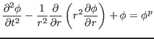
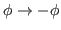
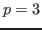
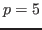
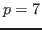

We present a fully implicit and time parallel numerical procedure based on the space-time finite element methods to simulate a physical singularity model based on the semilinear wave equation. For observing critical collapse, we consider semilinear wave equation in the spherical symmetry:
 |
To preserve spatial symmetry(

), we test the odd power of
could not indicate a singularity because of its late time growth. In the case of
, a critical solution is observed, but it is not easy to find self-similarity in the solution. Therefore, we test
power as the nonlinear term.The main purpose of this talk is to present an efficient parallelizable numerical approach to analyze physical singularity using with decent high resolutions. We apply nonlinear and KSP(Krylov Subspace Methods) solvers. Time parallel algorithm is implemented through time additive Schwarz preconditioner with a KSP solver. And, the time additive Schwarz preconditioner is vital to successful simulation. To reduce size of discrete problem, we apply non-uniform meshes on space-time finite element based on physical observation, and we found this feature relax the size of discrete problem without losing accuracy of discretization. We study about the optimized parameters for this numerical procedure. The time parallelizable algorithm is implemented through PETSc (Portable, Extensible, Toolkit for Scientific Computation, developed by Argonne National Laboratory).